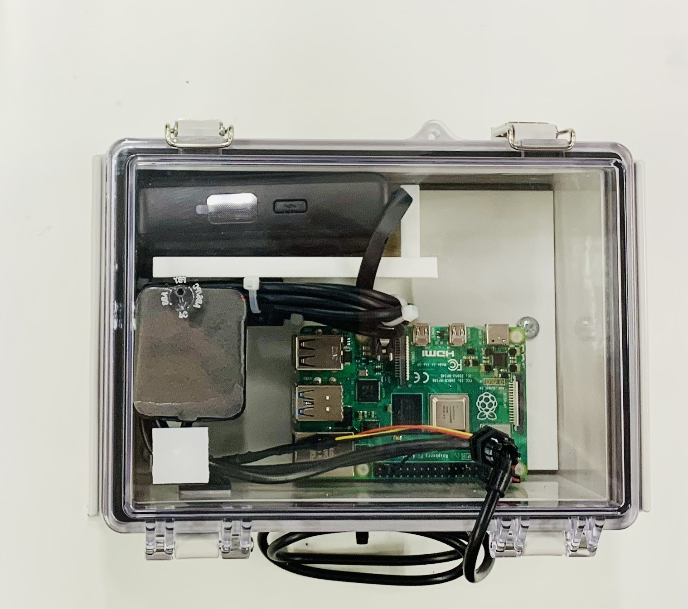

システム全体
本システムは Raspberry Pi を中心として、水温センサ、GPSモジュールおよびモバイルバッテリーで構成されています。

各部の名称
図2に各部の名称を示します。番号と下表を対応させて確認してください。

| 番号 | 名称 | 役割 |
|---|---|---|
| ① | Raspberry Pi | システム全体の制御を行います。 |
| ② | GPSモジュール | 位置情報および時刻を取得します。 |
| ③ | DS18B20水温センサ | 水温を測定します。 |
| ④ | モバイルバッテリー | システムへ電源を供給します。 |
| ⑤ | 防水ケース | 内部機器を保護します。 |
| ⑤ | 防水グランド | ケーブルをボックス内に引き込みつつ内部への水の侵入を防ぎます。 |
各部の説明
① Raspberry Pi
システム全体を制御するコンピュータです。GPSおよび水温センサから取得したデータを処理し、スマートフォンへ送信します。
② GPSモジュール
現在位置およびGPS時刻を取得します。起動直後は測位完了まで数分かかる場合があります。
③ DS18B20水温センサ
金属製のセンサ部を水中へ入れて使用してください。ケーブル接続部は水に浸さないでください。
④ モバイルバッテリー
USBケーブルで Raspberry Pi に接続して使用します。残量が少ない場合は計測前に充電してください。
⑤ 防水ケース
使用前に蓋が確実に閉まっていること、およびケーブルグランドが十分に締め付けられていることを確認してください。
⑥ 防水グランド
使用前に緩みがないようにしっかりとしめてあることを確認してください。
使用前チェック
| 確認項目 | 確認 |
|---|---|
| モバイルバッテリーは十分充電されている | □ |
| 防水ケースの蓋が閉まっている | □ |
| 防水グランドが締まっている | □ |
| 周りに建物のような遮蔽物がない | □ |
次の手順
ハードウェアの確認が完了したら、「使用方法」のページへ進み、システムを起動してください。